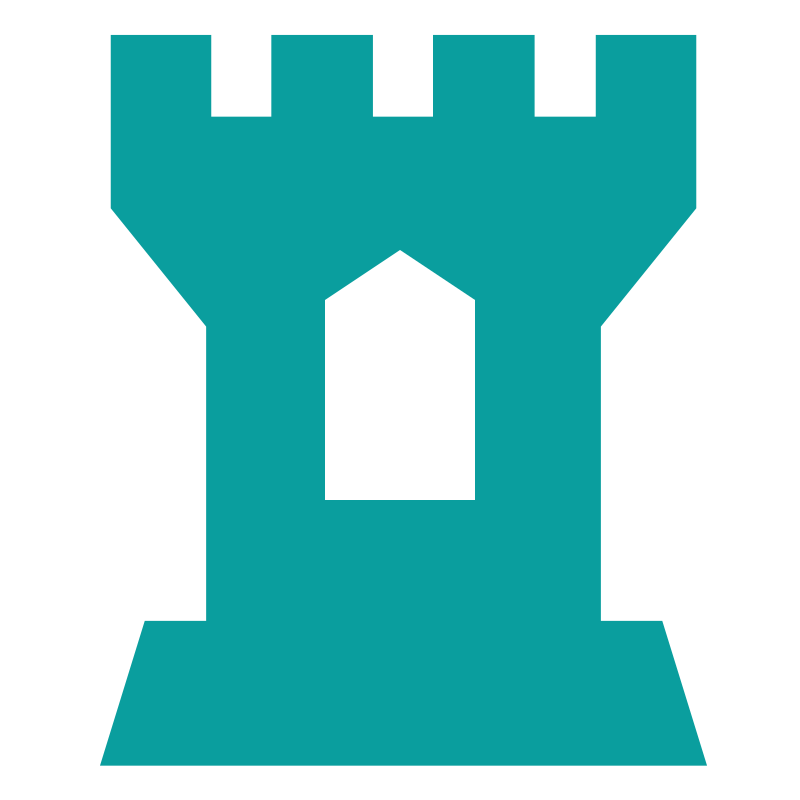

Nueva base, nueva web, nuevo año: nuevo comienzo. Como puedes ver, las cosas han cambiado. Si quieres mantenerte alertad@ de lo que pasa por aquí, puedes mirarlo en el apartado de Noticias.
Incluso si no conoces las reglas, eres vulnerable a ellas...
Recuerda que nos tomamos la seguridad enserio.
Para respetarnos y mantener un orden, tenemos un Reglamento disponible.
Pide cita para recibir un tour en la página de Tours.
Estos te proporcionarán información, ¡Y tendrás la oportunidad de ver la base en persona!
No pierdas la oportunidad.
No tengas miedo de pedir Ayuda.
Te ofrecemos nuestro contacto además de algunas soluciones para problemas comunes que continuamos actualizando.
Trataremos de ayudarte en todo lo que podamos.
